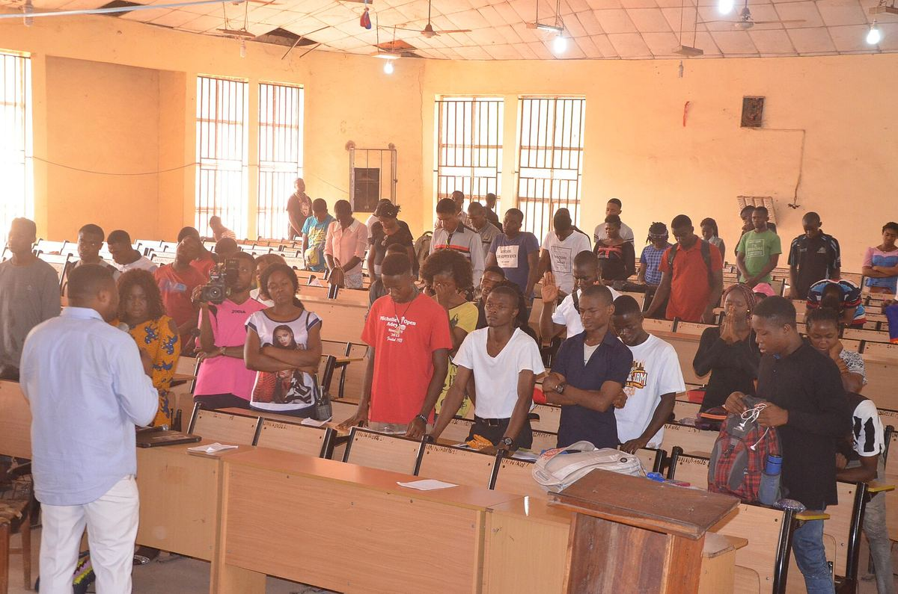
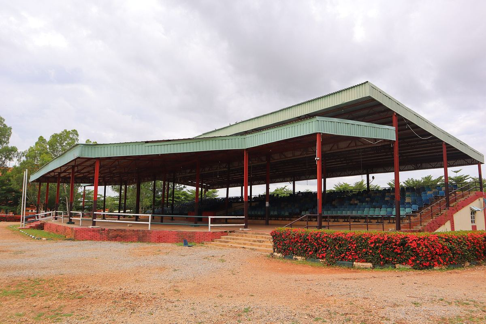

Admissions 2026/2027
Applications are open for UTME, Direct Entry, transfer, postgraduate and international candidates. Here’s everything you need to join Okunland.
Six steps to your admission letter
Register for UTME with JAMB
Choose Okunland University of Nigeria as your first choice and select your programme. Make sure your UTME subject combination matches the programme requirements below.
Meet the O’Level requirements
Five credits including English Language and Mathematics, in not more than two sittings (one sitting for MBBS, Pharm.D. and Nursing).
Register for Post-UTME screening
Create an account on the OKU E-Portal, pay the ₦2,000 screening fee and upload your O’Level results, birth certificate and passport photograph.
Sit the Post-UTME test
A 50-question computer-based test in English, Mathematics and your two core subjects, held at our CBT Centre or accredited centres in Abuja and Lagos.
Check your admission & accept on CAPS
Admission lists are published on the E-Portal and on JAMB CAPS. Accept your offer on CAPS within 7 days.
Pay acceptance fee & complete clearance
Pay the acceptance fee, print your admission letter and attend physical clearance with your original documents during freshers’ week.
Requirements by programme
Five O’Level credits including English Language and Mathematics are required for all programmes. Additional subject requirements and cut-offs are shown below.
| Programme | UTME subjects | Required O’Level credits | Cut-off |
|---|---|---|---|
| MBBS Medicine & Surgery | English, Biology, Chemistry, Physics | Biology, Chemistry, Physics (one sitting) | 260 |
| B.N.Sc. Nursing Science | English, Biology, Chemistry, Physics | Biology, Chemistry, Physics (one sitting) | 230 |
| LL.B. Law | English, Literature, + any two Arts/Social Science | Literature in English + one Arts subject | 240 |
| B.Eng. Engineering (all) | English, Mathematics, Physics, Chemistry | Physics, Chemistry, Further Maths or Technical Drawing | 220 |
| B.Sc. Computer Science / Software Eng. | English, Mathematics, Physics + one Science | Physics + one Science | 220 |
| B.Agric. / Agricultural Sciences | English, Chemistry, Biology/Agric, Maths/Physics | Chemistry, Biology/Agric, Physics/Maths | 180 |
| B.Sc. Accounting / Finance / Business | English, Mathematics, Economics + one Social Science | Economics + one Social Science | 200 |
| B.Sc. Mass Communication | English, Literature, Government + one | Literature + Government/History | 210 |
| B.Ed. programmes | English + three subjects relevant to the teaching subject | Two subjects relevant to the teaching subject | 180 |
How we calculate your admission score
OKU uses a transparent aggregate score out of 100, combining three components:
score ÷ 8
CBT score scaled
A1=4 … C6=2
Tip: Bring your JAMB registration slip, Post-UTME slip and a valid ID to the CBT centre. Arrive 60 minutes early — latecomers will not be admitted.
Post-UTME screening at a glance
- Eligibility
- UTME score of 180+ with OKU as institution of choice
- Fee
- ₦2,000 screening fee (payable online on the E-Portal via Remita)
- Format
- 50 multiple-choice questions, 60 minutes, computer-based
- Venues
- OKU CBT Centre (main campus), plus partner centres in Abuja and Lagos
- Results
- Released on the E-Portal within 72 hours of your test

2026/2027 admissions timeline
Dates may change in line with JAMB’s national admissions calendar. Subscribe to the Gazette to get reminders.
Already studied elsewhere?
Direct Entry (200 Level): Apply through JAMB DE with at least two A-Level passes (IJMB, JUPEB, Cambridge A-Level), an ND/HND at Upper Credit, or an NCE with Merit in relevant subjects, plus five O’Level credits.
Inter-university transfer: Students who have completed at least 100 Level with a CGPA of 3.00 (4.00 for Medicine and Law) may apply. Submit your transcript, a letter of good standing and your JAMB admission letter. Transfers are subject to available space.
PGD, Masters & PhD
Apply online through the Postgraduate School portal with your degree certificate, transcript (sent directly by your institution), NYSC certificate, two academic references and a research proposal (for M.Phil/PhD).

Welcome to Nigeria’s heartland
Students from 18 countries study at OKU. International undergraduates apply directly to the university — no UTME required — with WASSCE, A-Level, IB, KCSE or equivalent qualifications.
- Dedicated International Students Office for visas (STR), airport pick-up and orientation
- Guaranteed on-campus housing for your first year
- English-language support and a buddy programme
- Fees payable in USD or Naira